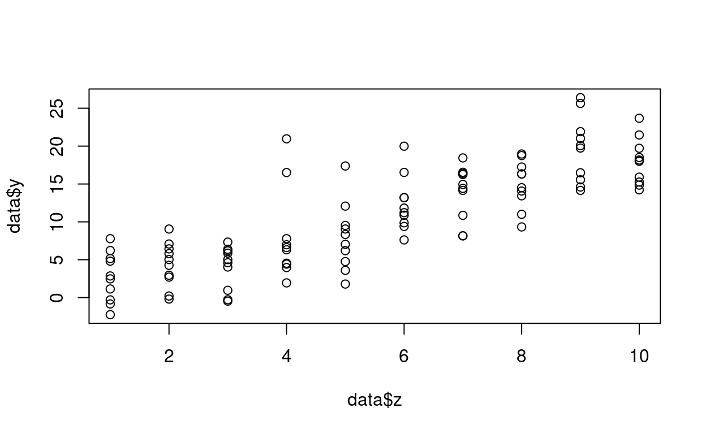
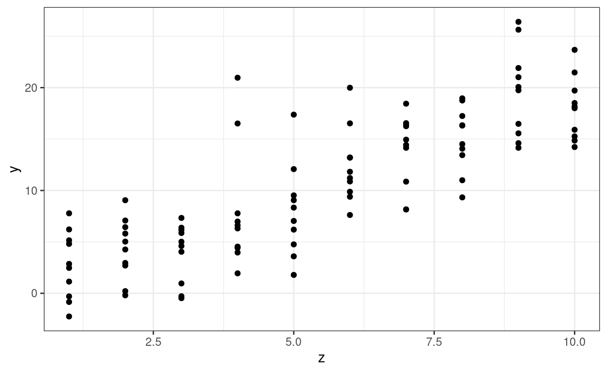
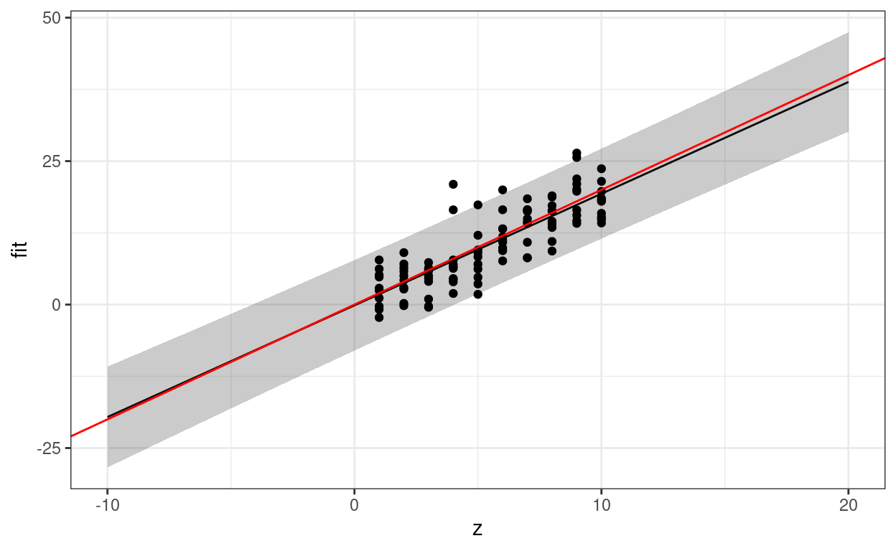
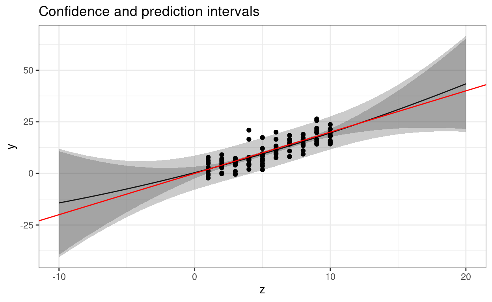

This is a companion document to the Lab01 vignette in the StatCompLab package. Start there, and then continue here.
We will start with the simple linear model \[ \begin{aligned} y_i &= \beta_0 + z_i \beta_z + e_i , \end{aligned} \] where \(y_i\) are observed values, \(z_i\) are observed values (“covariates”) that we believe have a linear relationship with \(y_i\), \(e_i\) are observation noise components with variance \(\sigma_e^2\), and \(\beta_0\), \(\beta_z\), and \(\sigma_e^2\) are model parameters.
First, generate synthetic data to use when developing the code for estimating models of this type. Enter the following code into your script file and run it with e.g. Ctrl+Enter:
z <- rep(1:10, times = 10)
data <- data.frame(z = z, y = 2 * z + rnorm(length(z), sd = 4))What does rep(), length(), and rnorm() do? Look at the help pages by running ?rep, ?rnorm, and ?length in the interactive Console window, or searching for them in the Help pane.
You can plot the data with “base graphics”,
plot(data$z, data$y)
or with ggplot,
# Put the first two lines at the beginning of your script file!
library(ggplot2) # Load the ggplot2 package
theme_set(theme_bw()) # Change the default theme (avoids grey background in the plots)
# Now we can plot!
ggplot(data) + geom_point(aes(z, y))
For this simple plot, the ggplot approach may seem more complicated than necessary, but for more complex plots ggplot will make plotting much easier. In the code above, we first supply the data set, and then add information about how to plot it, using a grammar of graphics. See ?aes for some more information about the parameters controlling the aesthetics of the geom that adds points to the plot.
Use the lm() function to estimate the model and save the estimated model in a variable called .
mod <- lm(y ~ z, data)Now we want to plot the linear predictor for the model as a function of \(z\), between \(z=-10\) and \(z=20\). First, create a new data.frame:
newdata <- data.frame(z = -10:20)Note that we don’t have any corresponding \(y\)-values yet!
Use predict(), plot(), and geom_line() to plot the linear predictor and the original data points in a single figure. Also add the true predictor with the help of geom_abline(intercept = ..., slope = ...) (use the col parameter to set a different color!). Create a new data frame and supply it directly to geom_line to override the original data:
data_pred <- cbind(newdata,
data.frame(fit = predict(mod, newdata)))
ggplot(...) +
... +
geom_line(data = data_pred, aes(y = fit))+ operation.
library(ggplot2)
data_pred <- cbind(newdata,
data.frame(fit = predict(mod, newdata)))
ggplot(data) +
geom_point(aes(z, y)) +
geom_line(data = data_pred, aes(z, fit)) +
geom_abline(intercept = 0, slope = 2, col = "red")interval="prediction" parameter for predict(), and combine the output (which is now a matrix, and there is no need to convert it to a data.frame first) with newdata with the help of cbind. The resulting data.frame should have variables named z, fit, lwr, and upr, and the whole object should be called pred.
pred <- cbind(
newdata,
predict(...)
)pred <- cbind(newdata,
predict(mod, newdata, interval = "prediction"))geom_ribbon(data = ..., aes(x = ..., ymin = ..., ymax = ...), alpha = 0.25) function to add the prediction intervals to the figure. The alpha parameter sets the “transparency” of the ribbon. Experiment with different values between 0 and 1. The result should look similar to this:
ggplot(data) +
geom_point(aes(z, y)) +
geom_line(data = pred, aes(z, fit)) +
geom_abline(intercept = 0, slope = 2, col = "red") +
geom_ribbon(data = pred, aes(...), alpha = 0.25)ggplot(data) +
geom_point(aes(z, y)) +
geom_line(data = pred, aes(z, fit)) +
geom_abline(intercept = 0, slope = 2, col = "red") +
geom_ribbon(data = pred, aes(x = z, ymin = lwr, ymax = upr), alpha = 0.25)In “base graphics”, the following would produce a similar result, but without the shaded bands:
plot(newdata$z, pred[, "fit"], type = "l", ylim = range(pred))
lines(newdata$z, pred[, "lwr"], lty = 2)
lines(newdata$z, pred[, "upr"], lty = 2)
points(data$z, data$y, pch = 20)
abline(0, 2, col = 2)Note: This section introduces functions that will be discussed in more detail in week 2.
Let’s say we want to redo the data analysis using different models (after all, we only know the true model because we generated synthetic data!). Instead of copying the plotting code for each new model, let’s create a function instead! Start with the following skeleton code, and fill in the missing bits:# x: a formula
# newdata: data for prediction
# xname: A string containing the name of the variable on the x-axis
plot_predictions <- function(x, newdata, xname = "x") {
pred <- ???
ggplot(pred) +
geom_line(aes_string(xname, "???")) +
geom_ribbon(???)
}plot_predictions <- function(x, newdata, xname = "x") {
pred <- cbind(newdata,
predict(x, newdata, interval = "prediction"))
ggplot(pred) +
geom_line(aes_string(xname, "fit")) +
geom_ribbon(aes_string(x = xname, ymin = "lwr", ymax = "upr"), alpha = 0.25)
}What should xname be set to when we call this function for our specific data? You should be able to run the following code to regenerate your previous figure:
plot_predictions(mod, newdata, xname = "z") +
geom_point(data = data, aes(z, y)) +
geom_abline(intercept = 0, slope = 2, col = "red")
Remark: Why can we use the + geom_* technique to add to the plot drawn by plot_predictions even though we don’t directly call ggplot() here? Every function returns its last computed object as output. In this case, that’s a ggplot object, and we can use it just as if we had spelled out the call to ggplot(). This also means that we could in principle write a function that adds features to a plot, taking an existing ggplot object as input, making complex plotting more structured and modular.
xlab(), ylab(), and ggtitle() to the plot:
plot_predictions <- function(x, newdata, xname = "x", ???, ...) {
???
ggplot(???) +
??? +
xlab(xname) +
ylab(ylab)
}
plot_predictions(mod, newdata, xname = "z", xlab = "z", ylab = "y")This passes any additional parameters through to the plot() function.
# Extended version of the solution:
plot_prediction <- function(x, newdata, xname = "x",
xlab = NULL, ylab = NULL, ...) {
if (is.null(xlab)) {
xlab <- xname
}
if (is.null(ylab)) {
ylab <- "Response"
}
pred <- cbind(newdata,
predict(x, newdata, interval = "prediction"))
pl <- ggplot() +
geom_line(data = pred,
aes_string(xname, "fit")) +
geom_ribbon(data = pred,
aes_string(xname, ymin = "lwr", ymax = "upr"), alpha = 0.25)
# Also add the confidence intervals for the predictor curve
conf <- cbind(newdata,
predict(x, newdata, interval = "confidence"))
pl <- pl +
geom_ribbon(data = conf,
aes_string(xname, ymin = "lwr", ymax = "upr"), alpha = 0.25)
# Add lables:
pl + xlab(xlab) + ylab(ylab)
}Use your new function to plot the predictions for the quadratic model
mod2 <- lm(y ~ 1 + z + I(z ^ 2), data)The I() syntax means that you don’t have to create a separate data variable equal to the square of the z-values; the lm() function will create it for you internally. The result should look similar to this: 
Finally, let’s estimate and plot predictions for four polynomial models, by first creating a list of formulas:
Look at the lecture slides and use thelapply() technique to estimate all four models and store the result in a variable called mods.
formulas <- c(y ~ 1,
y ~ z,
y ~ z + I(z^2),
y ~ z + I(z^2) + I(z^3))
mods <- lapply(...)formulas <- c(y ~ 1,
y ~ z,
y ~ z + I(z^2),
y ~ z + I(z^2) + I(z^3))
mods <- lapply(formulas, function(x) lm(...))formulas <- c(y ~ 1,
y ~ z,
y ~ z + I(z^2),
y ~ z + I(z^2) + I(z^3))
mods <- lapply(formulas, function(x) lm(x, data))You can now use something like the following code to plot all the results:
for (k in seq_along(formulas)) {
pl <-
plot_prediction(mods[[k]], newdata, xname = "z", ylab = "y") +
geom_point(data = data, aes(z, y)) +
geom_abline(intercept = 0, slope = 2, col = "red") +
ggtitle(as.character(formulas[k]))
print(pl)
}Look at the help text for seq_along()! Storing the plot as an object, pl, and then explicitly “printing” it is sometimes needed to ensure that all the plots are generated into a report document. Note: We will look at ways of combining multiple plots later.